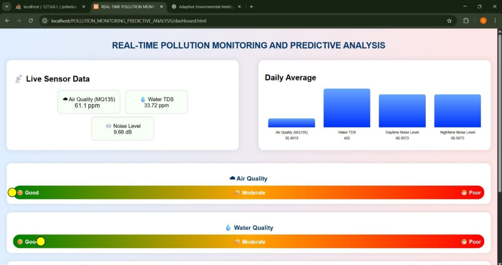
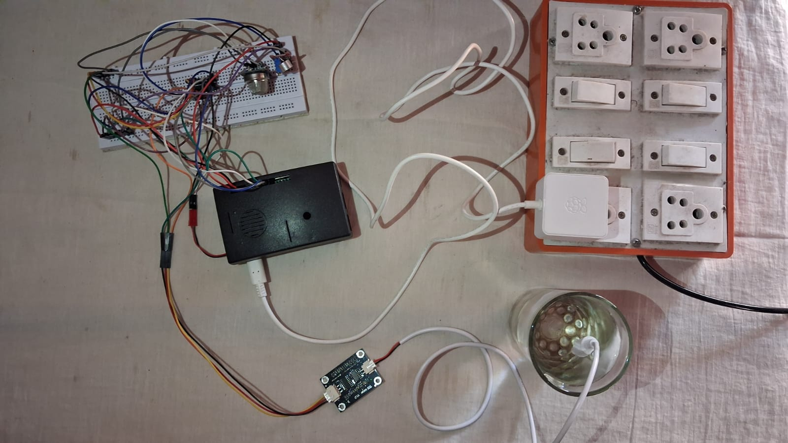

This project was developed to monitor environmental conditions such as air quality, water quality, and noise levels in real time using an IoT-based system. The main focus of the project is to display live data through a web dashboard, making it easy to understand and track environmental changes. The system collects data from different sensors and continuously updates it on a web interface. This helps users quickly identify whether the environment is safe or polluted and take necessary actions.
In this project, different sensors are used to measure environmental parameters. The MQ135 sensor detects air quality, the TDS sensor measures water purity, and the sound sensor measures noise levels. Since these sensors give analog output, an ADC module is used to convert the signals into digital values that can be processed by the Raspberry Pi. The Raspberry Pi acts as the main processing unit. It reads the sensor values, processes them, and sends the data to the backend server at regular intervals. The data is then stored in a database and displayed on a web dashboard. The web dashboard shows real-time values of air quality, water quality, and noise levels. It also includes a visual scale with color indicators, which helps users easily understand whether the values are in a safe range or not. This makes the system simple and user-friendly. The system also maintains stored data, which is used to show trends and daily average values. A machine learning model is used in the background to generate prediction values, which are displayed along with the live data. This project shows how real-time data from multiple sensors can be collected, processed, and displayed through a web application to monitor environmental conditions effectively.

